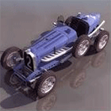

Camaro

É impossível passar desapercebido dirigindo um Camaro. A aparência forte e robusta da traseira e dianteira com design renovado produz uma percepção mais larga, baixa e contemporânea. São tantos detalhes que fica impossível perceber todos ao primeiro olhar, mas o conjunto final de design e performance do Camaro 2014 causa fortes emoções em qualquer um que atravesse o seu caminho.
Motorista e passageiro serão acomodados no dual cockpit que proporciona uma posição confortável em qualquer trajeto. O Camaro também oferece um sistema de entretenimento com tecnologia de ponta: o Chevrolet MyLink.
O Camaro 2014 recebeu atualizações de design e tecnologia, mantendo o mesmo DNA esportivo que o tornou um ícone automobilístico.
Motorista e passageiro serão acomodados no dual cockpit que proporciona uma posição confortável em qualquer trajeto. O Camaro também oferece um sistema de entretenimento com tecnologia de ponta: o Chevrolet MyLink.
O Camaro 2014 recebeu atualizações de design e tecnologia, mantendo o mesmo DNA esportivo que o tornou um ícone automobilístico.

